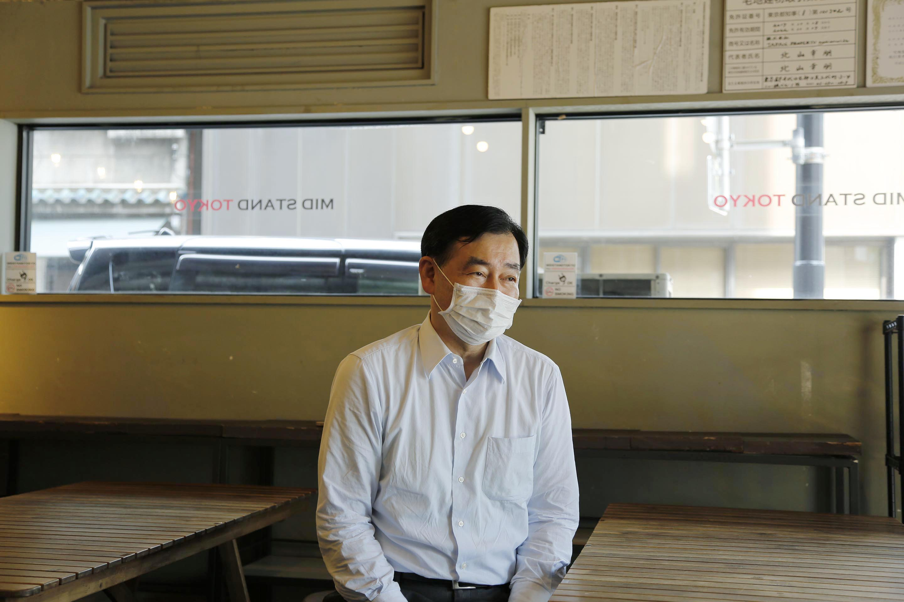
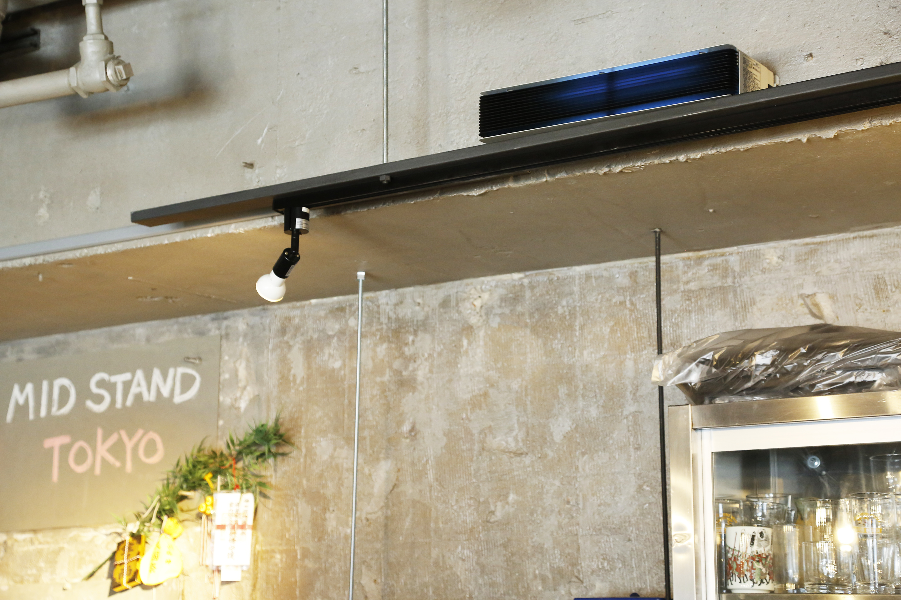

キッチン付きレンタルスペースMID STAND TOKYOに
屋内用紫外線除去装置UVCエアクリーンmanager®︎を導入
情報発信や地域の人たちの交流の場として東京神田でキッチン付きレンタルスペースを運営する
MID STAND TOKYO（http://www.midstand.com/）代表の田熊清德様に、
UVCエアクリーンmanager®︎導入について伺いました。
（※2020年6月4日撮影：ウイルス感染予防のためマスクを着用の上インタビューにお答えいただきました）
MID STAND TOKYO代表
田熊 清德 様
Q1.
「MID STAND TOKYO」は
どのようなスペースかご紹介ください。
単純にいうと「キッチン付きレンタルスペース」ですね。 弊社は家具の製造・販売で95年前に創業したのですが、今では家具・インテリア・雑貨販売、それと不動産賃貸業をしておりまして、実はここMID STAND TOKYOはその物件の中の一つだったのです。
元々某お蕎麦屋さんの店舗にお貸ししていたのですが、その店舗が解約になりまして、この場所が空いたのです。
そこでまた新たに新しいテナント様を入れようという考えもあったのですが、私共は本社が内神田なのですが、ここは創業の地ということでやっぱり直営で何かをやりたいということで、ある程度「交流の場」ということも視野に入れ、ここが「地域の交流の拠点」になればと思いまして、レンタルスペースとしてかなり自由な運営をできるような形式をとりました。
Q2.
新型コロナウイルスの流行により
どのような影響がありましたでしょうか？

そうですね。
やはり「キッチン付きレンタルスペース」ということですので飲食を伴います。お客様は地域の方、会社の方のパーティー、もしくは会議、それとこれから開業しようという方にチャレンジキッチンとしてお貸ししていたのですが、そういう中でここは定員30名で始め、「3密」に入ってしまうということで、3月いっぱいまでは営業を進めていたのですが、当然緊急事態宣言もあり4月～5月は休業ということになっております。
今まで通りに定員30名で何も対策しないでお貸しするのは、安全性の面でふさわしくないということで施設の機能更新、アップグレードをしようということで、色々感染症の対策に取り組んでおります。
Q3.
今回UVCエアクリーンmanagerを導入される
きっかけや想いを教えてください。

きっかけはインターネットでカナミックネットワークのUVCエアクリーンmanager®︎を見たことです。見てピンと来ました。「面白いぞ、これは」と。
私も緊急事態宣言から2ヵ月間、色んなマスコミ、ウェブも含めてコロナの話ばかりなので、かなりコロナオタクといいますか、どうやったら感染症を防止できるかということで個人的に探求していたわけです。やはり飲食店さんの、うちも飲食店といえばある意味飲食店なので、スペースをどうしようかということが課題でした。
手洗い等はかなり（ノロウイルスから始まって）対策できていたのですが、やはり「空気感染」をどう防ぐかということで、透明のアクリル衝立（ついたて）を設置したり、フェイスシールドを導入したりとか試みたのですが、飛沫を根本的に滅菌することはできないだろうか？と考えておりました。
その時にまさに目にしたのがこの「UVエアクリーンmanager®︎」で、これが導入する一つのきっかけになりました。
Q4.
今後どのようなスペースを
提供されていきたいですか？

やはりこのスペースで「地域の交流拠点」というのを目指しておりまして、「MID STAND TOKYO」というと何かすかした名前に思えるとは思うんですが、ここは神田「美土代町」という住所でして「MID」は「美土代＝美しい土」というところからつけています。
それから「STAND」というのはチャレンジキッチンでここから独り立ちしていただきたいという方の支援とですね、誰でも立ち寄ってもらいたいという想いが詰まっているのが、実はこの「MID STAND TOKYO」の意味です。
なぜ「MID STAND KANDA」じゃなくて「TOKYO」にしたかと言いますと、全国にはアンテナショップを持てない市町村、自治体が結構多いものですから、そういう所のアンテナショップ的な感じで地方の何かを発信できたらと思い「KANDA」じゃなくて「MID STAND TOKYO」としました。
東京から全国の地方を発信するということで、千代田区鍛冶町1丁目にある「日本で最も美しい村」連合さんともつながりを持ちまして何軒かの市町村にここでイベントをやってもらうという形でございます。地域だけでなくて地方との交流を図る、地方の安心で安全な物産もここで食べていただくということも含めて、やはり空間というのは安全・安心でなければいけない。我々も神田という土地柄「安全・安心パトロール」ということで地域の安全・防犯に取り組んでいます。
そんな中「新型コロナウイルス」という新しい敵が出てきましたが、これからは新型コロナウイルスと共に、ということでこれからは感染を防いで安心してこの場を使ってもらえる機能をこの場につけて、様々な方に安心してここで集まっていただき、今30名の定員を20名にする予定です。20名程度の会合でしたら安心してできるという場所を、弊社創業の地であるこの場所から発信していけたらと思っております